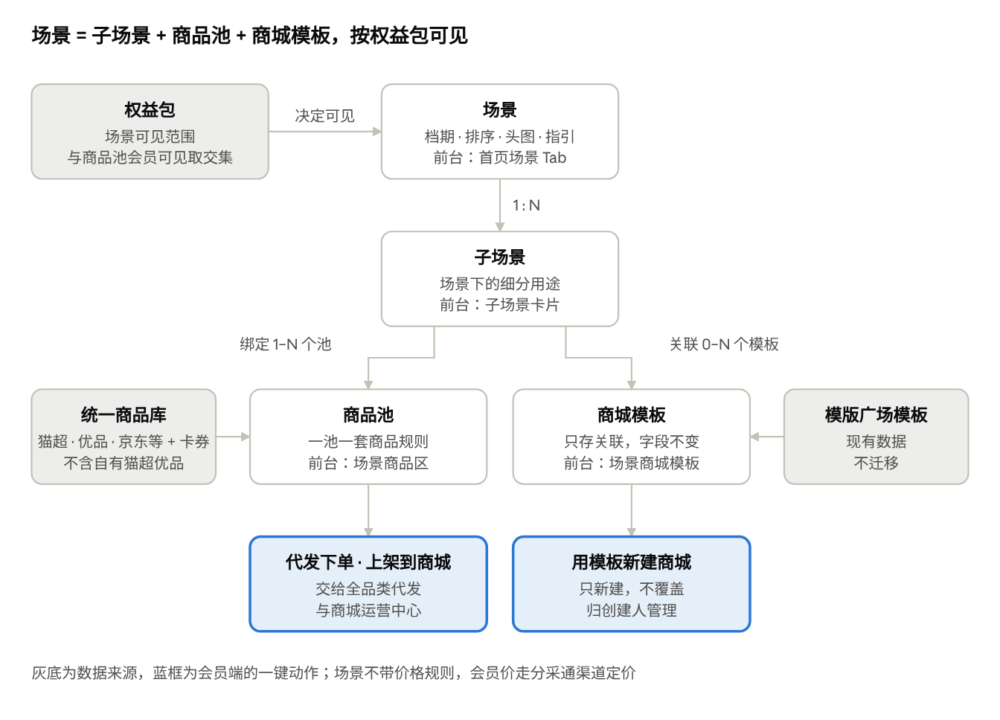

分采通 V1.0 场景运营产品需求
Oct 30, 2026 · @sanyuan
背景与目标
场景运营把分采通前台从「货架 + 模板库」改成「按场景给方案」：运营在统一商品库上按场景配好商品池和商城模板，服务商打开首页就能拿到一套春节方案，并直接代发、上架或开商城。V1.0 随年货节版 2026-11-20 上线。
现在的问题：
首页是 Banner + 资源中心 +「大家都在用」8 个类目，只给货不给方案；服务商要自己在 50 多万个 SKU 里挑春节货。
货盘只有自有猫超 / 自有优品；京东、平台精选等货源散在「其他代发」里，和首页、资源广场不互通。
模版广场是独立页面，模板和货盘脱节，开商城后还要重新选品。
运营换档期（春节 → 端午）要靠研发改页面。
| 目标 | 衡量方式 |
|---|---|
| 服务商进首页就能拿到春节方案 | 场景首页活跃会员占比、场景商品勾选率 |
| 选品直接变成交易 | 来自场景的代发单量与金额、上架商品数、用模板新建商城数 |
| 运营自己换档期和货盘 | 场景上下线、换池不需要发版 |
| 为 AI 留接口 | 场景、商品池、商品卡按结构化数据设计，V1.3 之后可被对话直接调用 |
具体目标值待与运营商定。
用户与场景
场景运营有两类用户：在会员端用场景的服务商，和在运营管理后台配场景的平台运营。
| 角色 | 我要…… | 以便…… |
|---|---|---|
| 服务商业务员 | 打开首页就看到当前档期（春节）的场景和子场景 | 不用自己在全量货盘里找货 |
| 服务商业务员 | 在子场景里按价格、库存、发货仓挑商品并看到我的成本和市场价利润率 | 快速判断能不能卖、有没有利润 |
| 服务商业务员 | 勾选商品后一键代发给客户的多个收件人 | 把春节年货直接发到客户员工手里 |
| 服务商业务员 | 勾选商品后一键上架到我管理的商城 | 让客户员工在商城里自选兑换 |
| 服务商业务员 | 用场景里的商城模板一键新建商城 | 当天就能给客户开出春节商城 |
| 服务商管理员 | 控制哪些子账号能代发、上架、新建商城 | 管住钱和商城 |
| 商品运营 | 为子场景绑定商品池，商品按规则自动上下架 | 货盘不靠手工维护，无货商品自动下掉 |
| 内容运营 | 配场景、档期、场景说明和关联模板，并控制上下线 | 按节点换场景，不依赖研发 |
| 客户运营 | 按权益包控制哪些服务商看得到哪些场景 | 区分付费权益，推动升级 |
| 运营负责人 | 看每个场景的浏览、代发、上架、开商城数据 | 年货节中途调货盘、节后复盘 |
本期范围
| 本期做 | 本期不做（去向） |
|---|---|
| 运营后台：场景 / 子场景管理、子场景绑定商品池、关联商城模板、可见权益包、场景数据 | 场景加价 / 场景专属会员价（节后看数据再定） |
| 会员端：首页改为场景页、场景商品卡、一键动作栏、场景商城模板与用模板新建商城 | 用模板覆盖已有商城的装修（后续） |
| 资源广场：增加平台货源和卡券、按场景筛选，与首页共用商品卡和一键动作 | 场景内 AI 对话与推荐（V1.3 之后），本期只留位置 |
| 模版广场下线并重定向，模板详情页保留 | 模板内容迁入运营后台、模板专题改绑商品池（后续） |
| 按权益包控制场景可见 | 上架商品与场景商品池动态同步（待确认，默认一次性上架） |
| 首批 3 个场景上线：春节年货、员工福利、工会慰问 | 企业码、猫超集采、礼包：不进场景 |
代发执行（批量下单、扣款、拆单、售后）属于「全品类代发」，上架定价属于「定价策略兼容」，各自单独写需求；本文只写场景侧入口和交接。
核心概念与对象关系
场景是运营配置的最小发布单元：一个场景有多个子场景，子场景绑定商品池和商城模板；权益包决定谁看得到。

场景运营对象关系
| 对象 | 含义 | 例子 |
|---|---|---|
| 场景 | 档期或主题，首页一级 Tab | 春节年货、员工福利、工会慰问 |
| 子场景 | 场景下的细分用途，决定商品和模板 | 员工年货、客户送礼 |
| 商品池 | 来自统一商品库（天猫超市、天猫优品、京东、1688、平台精选、入驻商家、卡券），一池一套商品规则，自动上下架，带排序值和指定会员可见 | 春节粮油池、春节零食池 |
| 商城模板 | 模版广场里的现有整套商城方案（微页面 + 特色专题），字段沿用老系统 | 春节员工福利商城 |
| 权益包 | 会员已开通的权益组合，控制场景可见 | 企业控制台 · 我的权益 |
运营后台需求
分采通在运营管理后台作为一个独立渠道接入：场景列表独立配置，商品池复用现有能力，定价走分采通渠道规则。新增菜单：分采通 → 场景管理 / 场景数据。
1. 场景列表
| 区域 | 内容 |
|---|---|
| 筛选 | 场景名称、状态、档期范围、可见权益包 |
| 列表字段 | 场景名称、档期（开始–结束）、状态、排序值、可见权益包、子场景数、关联模板数、商品数（有货 / 全部）、更新人、更新时间 |
| 操作 | 新建、编辑、预览（按指定权益包视角看会员端效果）、上线、下线、复制、删除（仅草稿） |
| 状态 | 草稿 → 待生效（已上线但未到档期）→ 生效中 → 已结束（过档期自动）；任何时候可手动下线 |
2. 场景编辑
| 分组 | 字段 | 规则 |
|---|---|---|
| 基本信息 | 场景名称、副标题、场景说明、适合客户标签、头图 | 名称必填，用作首页 Tab 名；字数上限交设计定 |
| 档期 | 开始时间、结束时间、是否常驻 | 常驻场景不设结束时间；到期自动结束 |
| 可见范围 | 全部会员 / 指定权益包（多选） | 默认指定权益包；与商品池「指定会员可见」取交集 |
| 排序 | 排序值 | 越小越靠前，决定 Tab 顺序和默认场景 |
| 热销指引 | 文案若干条（如「500 元预算适合哪种商城」） | 本期仅展示，后续作为 AI 提示词 |
| 子场景 | 名称、图标、说明、排序值、绑定商品池、关联模板 | 至少 1 个子场景才能上线 |
3. 子场景绑定商品池
从现有商品池中选择，一个子场景可绑多个池；前台按池分组展示，组名默认取池名、可改，组间可排序。
商品池沿用现有规则：每个池一套商品规则，所有货源都过这套规则并自动上下架；规则可按平台利润率筛选（仅内部可见）；池内手动加入的商品带排序值。
商品池增加「使用渠道」标注（发发福利 / 分采通 / 共用），绑定时只列可用于分采通的池。
绑定时显示池内商品数、有货数、货源分布，可跳转到商品池详情。
自有猫超 / 自有优品不入池（它们来自服务商自己的账号）。
4. 关联商城模板
从模版广场的现有模板里选，只存关联关系；模板的字段和内容沿用老系统，本次不做变更。
一个子场景可关联 0 至多个模板，可排序。
模板被下线或删除时，前台自动隐藏，后台标红提示。
5. 场景数据
按场景 / 子场景、日期范围统计，支持导出：浏览会员数、商品点击数、勾选商品数、代发批次数 / 单量 / 金额、上架商品数 / 上架会员数、模板预览数、新建商城数；另列商品维度 Top 榜（按代发单量、上架次数）。优先级 P1。
6. 操作日志
场景和子场景的新增、编辑、上下线、换池、换模板都记录操作人、时间和变更前后内容。
会员端需求
首页改为场景页；资源广场保留为全量货盘。两边共用同一套商品卡和一键动作栏。
1. 首页结构
| 顺序 | 模块 | 变化 | 内容与交互 |
|---|---|---|---|
| 1 | 搜索栏 | 保留 | 搜当前场景内商品；位置预留给 AI 对话入口 |
| 2 | 公告 Banner | 保留 | 如出版物资质提醒 |
| 3 | 会员卡 + 订单角标 + 快捷入口 | 保留 | 快捷入口加「全品类代发」，企业码从资源中心挪到这里 |
| 4 | 场景 Tab | 新增 | 只显示当前会员有权益的、生效中的场景；按排序值排列；默认选中第一个 |
| 5 | 场景头部 | 新增 | 头图、场景说明、适合客户、档期、热销指引 |
| 6 | 子场景卡片 | 新增 | 横向卡片，切换后下方商品和模板联动；默认第一个 |
| 7 | 场景商品 | 新增，替代「大家都在用」 | 见下文 2–3 |
| 8 | 场景商城模板 | 新增，替代模版广场 | 见下文 5 |
| 9 | 一键动作栏 | 新增 | 勾选商品后吸底出现，见下文 4 |
| — | 资源中心（猫超 / 优品 / 企业码 Tab） | 下线 | 货源入口挪到资源广场 |
2. 场景商品区
按子场景绑定的商品池分组展示，组内按池的排序值排。
筛选：会员价区间、货源（天猫超市 / 天猫优品 / 京东 / 1688 / 平台精选 / 入驻商家 / 卡券）、发货仓（电商仓 / 商家仓）、市场价利润率区间、仅看可上架。货源选中天猫超市时，增加价格力标签和猫超商品标签筛选。无货商品由商品池规则自动下掉，前台不提供库存筛选。
排序：综合（池排序值）、会员价升 / 降、市场价利润率。
视图：卡片 / 列表，沿用资源广场习惯。
全选本组、全选本页。
3. 商品卡
| 字段 | 适用货源 | 说明 |
|---|---|---|
| 主图、名称、规格 | 全部 | 多规格显示规格数，点开选规格 |
| 货源标 | 全部 | 天猫超市 / 天猫优品 / 京东 / 1688 / 平台精选 / 入驻商家 / 卡券 |
| 会员价 | 全部 | 分采通渠道会员价，价格旁标注「会员价」，即代发扣款价 |
| 市场价 | 全部 | 划线价 |
| 市场价利润率 | 全部 | (市场价 − 会员价) ÷ 市场价；不显示平台利润率和接口价 |
| 库存状态 | 全部 | 有货 / 库存紧张（库存 < 50） |
| 发货仓 | 全部 | 电商仓（京东、天猫超市）/ 商家仓 |
| 平均到手价 | 天猫超市 | 部分商品有，T+1 更新，有则显示 |
| 价格力标签 | 天猫超市 | 天猫超市给出的 L1–L4.5 标签，平台只展示 |
| 猫超商品标签 | 天猫超市 | 主推商品、时令节日、臻选商品、支持七无、猫超仓发货等，按供应链返回自动打标 |
| 好评率 | 京东 | V1.2 接入京东评价组件后显示；本期在卡片上预留位置 |
| 同品替换提示 | 天猫超市、天猫优品 | 会员自有猫超 / 优品有同 SKU 时显示「下单与上架将使用自有同品」 |
| 操作 | 全部 | 勾选、查看详情（抽屉）、单品代发、单品上架（卡券无此按钮） |
卡片按货源显示特殊字段：没有的字段不占位，不显示「-」。
4. 一键动作栏
勾选至少 1 件商品后吸底出现：已选 N 件 · 加入已选商品 · 代发下单 · 上架到商城 · 清空。
| 动作 | 交互 | 交接给 |
|---|---|---|
| 加入已选商品 | 加入后 toast 提示，可跳往已选商品 | 全品类代发 · 已选商品 |
| 代发下单 | 带着勾选商品进入批量下单页填收件人；本页不生成订单 | 全品类代发 · 批量下单 |
| 上架到商城 | 弹窗：选商城（只列我管理的、未过期的）→ 选定价方式（加价规则或定价策略，基准会员价 / 平均到手价 / 市场价）→ 确认 → 生成上架任务，结果进导入导出；含卡券时提示卡券将跳过 | 商城运营中心 · 我的商品 |
| 清空 | 清除全部勾选 | — |
勾选在切换子场景、翻页时保留，切换场景 Tab 时保留并提示；单次勾选上限待定。
没有对应权限点的账号，按钮置灰并提示「请联系管理员开通」。
5. 场景商城模板
模板卡片和详情页的字段沿用老系统模版广场，本次不做变更。
「预览」打开现有模板详情页。
「用此模板新建商城」弹窗：商城名称（默认模板名）、商城类型（取模板的，不可改）、定价方式 → 用户确认后创建；只新建、套用模板装修和内容、归创建人管理；完成后跳到我的商城并高亮新商城。
我的商城卡片增加「来自场景模板」标识。
子场景没有关联模板时，整个模块不显示。
6. 资源广场
| 区域 | 改动 |
|---|---|
| 货源 Tab | 自有猫超 · 自有优品 · 平台货源（二级：天猫超市 / 天猫优品 / 京东 / 1688 / 平台精选 / 入驻商家）· 卡券。开通了自有猫超的会员不显示平台天猫超市，开通了自有优品的不显示平台天猫优品，两者分别判断 |
| 筛选 | 保留现有筛选；新增「按场景」；平均到手价、价格力标签和猫超商品标签只在天猫超市货源（自有猫超、平台天猫超市）显示 |
| 成本列 | 自有猫超 / 自有优品显示接口价；平台货源和卡券显示会员价 |
| 商品卡 | 与首页共用，特殊字段按货源显示（见上文商品卡） |
| 动作 | 与首页共用一键动作栏；「挑选入方案」是否保留待确认 |
| 老入口 | 「其他代发 · 代发选品」重定向到平台货源 Tab |
7. 权益包可见与空状态
企业控制台「我的权益」增加「可见场景」展示。
一个场景都看不到时，首页场景区显示空状态：去资源广场选品 + 联系客服开通场景权益。
子场景商品池全部为空时，该子场景不显示；场景下没有可显示的子场景时，该场景 Tab 不显示。
8. 模版广场下线
顶部导航去掉「模版广场」；/shop/template 重定向到首页并提示「模板已按场景整理到首页」；模板详情页保留，供场景链接。
业务规则
| 规则 | 内容 |
|---|---|
| 价格展示 | 平台货源和卡券显示分采通渠道会员价；不显示接口价、结算价和平台利润率；只显示市场价利润率；每个价格都标清口径。天猫超市商品另显示平均到手价（有则显示）、价格力标签和猫超商品标签；京东商品接入评价组件后显示好评率 |
| 场景不加价 | 本期场景只组织商品和模板，不带任何价格规则；同一商品在不同场景里会员价相同 |
| 库存 | 无货商品由商品池规则自动下掉；库存紧张（< 50）显示标签；代发下单时再校验一次 |
| 自有猫超 / 优品 | 不进场景（场景里的天猫超市、天猫优品是统一商品库里的平台货源）；代发和上架时按 SKU ID 匹配会员自有账号同品并替换，写入商品替换日志；有自有权限的会员在资源广场只看自有猫超 / 优品，不看对应的平台货源；匹配不到时的处理待确认 |
| 卡券 | 可进场景、可代发、可看详情；不可上架到商城；勾选中含卡券时，上架自动跳过并提示。商品类型已不区分卡券，如何识别卡券待确认 |
| 可见性 | 场景可见 = 场景的可见权益包 ∩ 商品池的指定会员可见；子账号跟随所属会员 |
| 档期与默认场景 | 只展示生效中的场景；多个同时生效时按排序值，第一个为默认 Tab |
| 场景下线 | 前台立即消失；已上架到商城的商品、已生成的代发批次、已新建的商城不受影响 |
| 商品下架 | 商品池下掉的商品在前台消失；已勾选的在动作时提示失效并移除 |
| 一键上架 | 只能上架到我管理的、未过期的商城；一次性复制，不跟随商品池动态变化；上架前必须定价；商城已有的商品跳过 |
| 新建商城 | 只新建，不覆盖；套用模板装修；归创建人管理；模板字段与内容沿用老系统，本次不变更；专题商品默认沿用模板原配置 |
| 权限 | 代发下单、一键上架、新建商城各是一个角色权限点，在企业控制台配置；浏览场景不需要单独权限 |
| 企业码、猫超集采 | 不进场景，首页只保留企业码跳转入口 |
首批场景与埋点
首批 3 个场景 11/20 前由运营配好。子场景和商品池下表为建议，由商品运营、内容运营定稿。
| 场景 | 建议子场景 | 档期 | 可见 |
|---|---|---|---|
| 春节年货 | 员工年货、客户送礼 | 11/20 至春节（2027-02-06） | 待定 |
| 员工福利 | 待运营定 | 常驻 | 待定 |
| 工会慰问 | 待运营定 | 常驻 | 待定 |
老会员上线时按权益包默认开放至少一个场景，避免首页为空。
埋点：
| 事件 | 属性 |
|---|---|
| 场景 Tab 曝光 / 点击 | 场景 ID、位置 |
| 子场景切换 | 场景 ID、子场景 ID |
| 商品曝光 / 点击详情 | 商品 ID、货源、商品池 ID、入口（首页 / 资源广场） |
| 勾选 / 取消勾选 | 商品 ID、场景 ID |
| 一键动作点击 | 动作类型、商品数、是否含卡券 |
| 上架完成 | 商城 ID、成功数 / 跳过数、定价基准 |
| 模板预览 / 新建商城提交 | 模板 ID、场景 ID |
| 空状态曝光 | 会员 ID、权益包 |
代发批次和上架任务要带上「来源入口 + 场景 ID」，以便场景数据统计到成交。
待确认
前 3 条影响开发量，建议需求评审前定。
卡券如何识别：商品类型已不区分卡券，用类目、货源还是虚拟商品属性来判断「不可上架」？
同品替换匹配不到时：按平台货源下单上架，还是提示不可替换？
权益包与场景的对应关系，以及老会员上线时默认看到哪些场景。
商品池的「使用渠道」标注是否新增，还是发发福利与分采通的池完全共用。
一键上架上限与勾选上限（单次多少件）。
「挑选入方案」是否保留。
首批 3 个场景的子场景、商品池和关联模板。
依据：分采通 V1.0 年货节版：产品架构与工作台栏目改版 · 分采通首页、资源广场与模板广场场景化重构：产品架构思路 · 2026-10-30 会员端实测